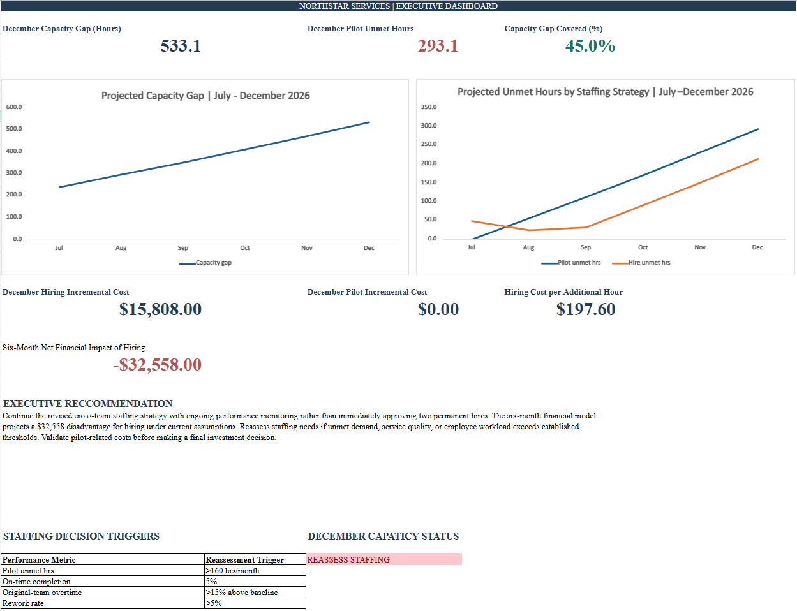

When demand grows, is hiring more people really the answer?
Northstar Services, a fictional 40-employee service organization, was facing growing customer demand and uneven workforce utilization. Some teams had capacity to spare while the Implementation team was projected to fall increasingly behind.
Leadership had a seemingly straightforward option: hire two additional employees. But additional headcount comes with recruitment, onboarding, ramp-up time, and recurring labor costs.
The question: Could Northstar better use existing capacity before committing to permanent hiring—and how would those choices compare financially over six months?
I approached the decision as a capacity allocation problem first, then tested its financial implications. The analysis used a six-month Excel model with explicit assumptions and competing staffing scenarios.
Projected customer requests using 3% monthly growth and an average of eight work hours per request; compared demand with available employee hours.
Evaluated a temporary cross-team pilot redirecting 240 hours monthly against hiring two Implementation employees with a phased productivity ramp.
Compared incremental completed requests, weighted contribution margin, loaded labor costs, onboarding, service quality, and workload triggers.
By December, the modeled capacity shortfall reached 533.1 hours. Redirecting 240 hours from other teams through the staffing pilot covered approximately 45.0% of that gap, but left 293.1 hours of unmet demand.
The hiring alternative reduced December unmet demand to 213.1 hours—80 fewer hours than the pilot—yet still did not eliminate the shortage.
Above the proposed 160-hour monthly reassessment threshold.
The executive dashboard brings together projected capacity gaps, staffing scenario comparisons, incremental costs, and a threshold-based staffing alert. It is a screenshot of the Excel deliverable created for this simulated case study.

The model used a weighted contribution margin of $1,597.50 per completed request, based on a simulated mix of standard, moderate, and high-complexity work. Two hires carried $15,808 in monthly loaded labor costs, plus $8,000 in one-time recruitment and onboarding costs. Productivity was modeled at 60% in month one, 85% in month two, and 100% thereafter.
| December comparison | Modeled result |
|---|---|
| Hiring cost (monthly incremental) | $15,808 |
| Additional capacity versus pilot | 80 hours |
| Additional completed requests | 10 |
| Additional contribution margin | $15,975 |
| Net December hiring impact | +$167 |
| Net six-month hiring impact | −$32,558 |
Later months produced a small positive incremental return, but not enough to offset the earlier hiring and onboarding expense.
The $8,000 onboarding expense is included in the six-month hiring-cost totals, not deducted twice. Financial results are scenario estimates, not actual revenue or realized savings. The model does not fully quantify pilot training, overtime, or displaced work.
Cost alone should not determine staffing. The pilot preserves financial flexibility, but the growing service backlog raises legitimate concerns about delivery performance and employee workload.
I therefore recommended a revised cross-team pilot with active measurement, rather than an unconditional decision against hiring.
December's modeled unmet demand exceeds the first trigger. That calls for immediate investigation and a staffing review, not automatic approval of permanent hires.
Continue the revised cross-team staffing strategy with ongoing performance monitoring rather than immediately approving two permanent hires. Under the modeled assumptions, hiring produces a $32,558 six-month financial disadvantage. Investigate the December capacity threshold breach, validate any unmodeled pilot costs, and reconsider permanent staffing if demand, service quality, or employee workload warrants it.
← Return to selected workThis independent project demonstrates demand and capacity forecasting, scenario analysis, operational tradeoff evaluation, contribution-margin modeling, executive reporting, and decision-trigger design.
Methodology note: Northstar Services, its employees, customer requests, costs, and results are fictional and simulated for portfolio demonstration. The capacity and profitability figures are modeled estimates. No actual organizational outcomes are claimed.